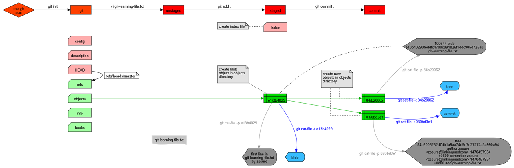
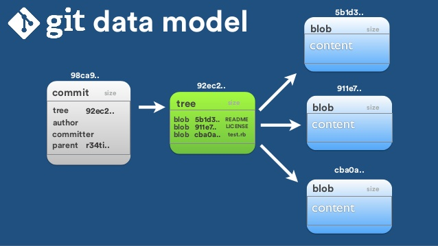

Git 源码分析00：简介及第一个commit
Git 使用得越多，就越感觉有必须要学一下它，比较是大声 Linus Torvalds写的。一个人写出了linux和git，确实很让人佩服，所以就决定从第一个commit开始分析一下。
准备分析的思路 大致的思路就是着重分析从第一个commit到v1.0.0中间发生的所有的记录。
获取git 源码 直接运行以下命令
1 git clone https://github.com/git/git
“梦”开始的地方 在git上能看见的第一个commit，可以看见内容就是“git的初始版本，从地狱来的信息管理器”，现在感觉信息管理就是一个地狱啊！如下
1 2 3 4 5 提交： e83c5163316f89bfbde7d9ab23ca2e25604af290 [e83c516] 作者： Linus Torvalds <torvalds@ppc970.osdl.org> 日期： 2005年4月7日 15:13:13 提交者： Linus Torvalds Initial revision of "git", the information manager from hell
直接运行checkout命令就可以下载下来了。
1 git checkout e83c5163316f89bfbde7d9ab23ca2e25604af290
具体内容如下：
1 2 3 4 5 6 7 8 9 10 11 -rw-r--r-- 1 ww 197121 2484 3月 24 15:35 cache.h -rw-r--r-- 1 ww 197121 503 3月 24 15:35 cat-file.c -rw-r--r-- 1 ww 197121 4103 3月 24 15:35 commit-tree.c -rw-r--r-- 1 ww 197121 1198 3月 24 15:35 init-db.c -rw-r--r-- 1 ww 197121 957 3月 24 15:35 Makefile -rw-r--r-- 1 ww 197121 5681 3月 24 15:35 read-cache.c -rw-r--r-- 1 ww 197121 8392 3月 24 15:35 README -rw-r--r-- 1 ww 197121 986 3月 24 15:35 read-tree.c -rw-r--r-- 1 ww 197121 2034 3月 24 15:35 show-diff.c -rw-r--r-- 1 ww 197121 5395 3月 24 15:35 update-cache.c -rw-r--r-- 1 ww 197121 1441 3月 24 15:35 write-tree.c
makefile 可以通过makefile看出来,此时生成的可执行的程序为update-cache show-diff init-db write-tree read-tree commit-tree cat-file。所以我们下面就需要分析一下这些命令及其构成。
1 2 3 4 5 6 7 8 9 10 11 12 13 14 15 16 17 18 19 20 21 22 23 24 25 26 27 28 29 30 31 32 33 34 35 36 37 38 39 40 CFLAGS=-g CC=gcc PROG=update-cache show-diff init-db write-tree read-tree commit-tree cat-file all: $(PROG) install: $(PROG) install $(PROG) $(HOME) /bin/ LIBS= -lssl init-db: init-db.o update-cache: update-cache.o read-cache.o $(CC) $(CFLAGS) -o update-cache update-cache.o read-cache.o $(LIBS) show-diff: show-diff.o read-cache.o $(CC) $(CFLAGS) -o show-diff show-diff.o read-cache.o $(LIBS) write-tree: write-tree.o read-cache.o $(CC) $(CFLAGS) -o write-tree write-tree.o read-cache.o $(LIBS) read-tree: read-tree.o read-cache.o $(CC) $(CFLAGS) -o read-tree read-tree.o read-cache.o $(LIBS) commit-tree: commit-tree.o read-cache.o $(CC) $(CFLAGS) -o commit-tree commit-tree.o read-cache.o $(LIBS) cat-file: cat-file.o read-cache.o $(CC) $(CFLAGS) -o cat-file cat-file.o read-cache.o $(LIBS) read-cache.o: cache.h show-diff.o: cache.h clean: rm -f *.o $(PROG) temp_git_file_* backup: clean cd .. ; tar czvf dircache.tar.gz dir-cache
编译 问题：undefined reference to symbol 'SHA1_Init@@libcrypto.so.10' 1 2 3 4 5 6 7 8 9 10 11 12 13 14 15 16 gcc -g -o update-cache update-cache.o read-cache.o -lssl -L/usr/lib64 /usr/bin/ld: update-cache.o: undefined reference to symbol 'SHA1_Init@@libcrypto.so.10' //usr/lib64/libcrypto.so.10: error adding symbols: DSO missing from command line collect2: error: ld returned 1 exit status make: *** [update-cache] Error 1 ``` 由于自己电脑上重新装了一个openssl导致出了问题 >参考https://bbs.csdn.net/topics/391984119?list=lz >首先你系统中有一套标准的openssl库，但是你现在要连接自己指定路径下的openssl库，这两者产生了冲突 >``` C/C++ code >LIBS:= -L/usr/local/openssl/lib -lssl \ > -L/usr/local/openssl/lib -lcrypt \ > -L/usr/lib64 -lssl \ >
你链接了2个ssl。
然后修改了下自己的代码
1 2 -LIBS= -lssl +LIBS=-L/usr/local/openssl/lib -lssl_j -lcrypto_j
编译找不到zlib.h的解决办法 1 2 3 4 5 6 7 8 9 10 11 12 13 14 15 16 17 18 gcc -g -o update-cache update-cache.o read-cache.o -L/usr/local/openssl/lib -lssl_j -lcrypto_j update-cache.o: In function `index_fd': /root/for_git/git/update-cache.c:90: undefined reference to `deflateInit_' /root/for_git/git/update-cache.c:99: undefined reference to `deflate' /root/for_git/git/update-cache.c:107: undefined reference to `deflate' /root/for_git/git/update-cache.c:110: undefined reference to `deflateEnd' read-cache.o: In function `read_sha1_file': /root/for_git/git/read-cache.c:112: undefined reference to `inflateInit_' /root/for_git/git/read-cache.c:113: undefined reference to `inflate' /root/for_git/git/read-cache.c:126: undefined reference to `inflate' /root/for_git/git/read-cache.c:129: undefined reference to `inflateEnd' read-cache.o: In function `write_sha1_file': /root/for_git/git/read-cache.c:143: undefined reference to `deflateInit_' /root/for_git/git/read-cache.c:144: undefined reference to `deflateBound' /root/for_git/git/read-cache.c:152: undefined reference to `deflate' /root/for_git/git/read-cache.c:154: undefined reference to `deflateEnd' collect2: error: ld returned 1 exit status make: *** [update-cache] Error 1
失败参考 https://ask.csdn.net/questions/752062
可以先搜索下zlib.h在哪个目录下，然后再makefile文件里面添加这个路径，搜索zlib.h可以使用这个命令：
成功参考 https://blog.csdn.net/chameleons/article/details/36174591?utm_source=blogxgwz0
android NDK编译工程出现以下错误：
undefined reference to 'inflate'
undefined reference to 'inflateEnd'
undefined reference to 'inflateInit_'
undefined reference to 'inflateReset'
原因：这些都是libz.so库中的函数，程序没有导入libz动态库
解决方法：在Android.mk中加入
LOCAL_LDLIBS += -lz
编译成功 现在makefile的不同如下
1 2 -LIBS= -lssl +LIBS=-L/usr/local/openssl/lib -lssl_j -lcrypto_j -lz
如此这般make就成功了。
程序分析 简单的阅读一下几个生成程序的功能
update-cache 参考https://blog.csdn.net/azurelaker/article/details/81675175
update-cache 主程序 1 2 3 4 5 6 7 8 9 10 11 12 13 14 15 16 17 18 19 20 21 22 23 24 25 26 27 28 29 30 31 int main(int argc, char **argv) { int i, newfd, entries; entries = read_cache(); if (entries < 0) { perror("cache corrupted"); return -1; } newfd = open(".dircache/index.lock", O_RDWR | O_CREAT | O_EXCL, 0600); if (newfd < 0) { perror("unable to create new cachefile"); return -1; } for (i = 1 ; i < argc; i++) { char *path = argv[i]; if (!verify_path(path)) { fprintf(stderr, "Ignoring path %s\n", argv[i]); continue; } if (add_file_to_cache(path)) { fprintf(stderr, "Unable to add %s to database\n", path); goto out; } } if (!write_cache(newfd, active_cache, active_nr) && !rename(".dircache/index.lock", ".dircache/index")) return 0; out: unlink(".dircache/index.lock"); }
readcache 分析 所以需要从readcache开始
1 2 3 4 5 6 7 8 9 10 11 12 13 14 15 16 17 18 19 20 21 22 23 24 25 26 27 28 29 30 31 32 33 34 35 36 37 38 39 40 41 42 43 44 45 46 47 48 49 50 51 52 53 54 55 56 57 const char *sha1_file_directory = NULL; struct cache_entry **active_cache = NULL; unsigned int active_nr = 0, active_alloc = 0; int read_cache(void) { int fd, i; struct stat st; unsigned long size, offset; void *map; struct cache_header *hdr; errno = EBUSY; if (active_cache) return error("more than one cachefile"); errno = ENOENT; sha1_file_directory = getenv(DB_ENVIRONMENT); if (!sha1_file_directory) sha1_file_directory = DEFAULT_DB_ENVIRONMENT; if (access(sha1_file_directory, X_OK) < 0) return error("no access to SHA1 file directory"); fd = open(".dircache/index", O_RDONLY); if (fd < 0) return (errno == ENOENT) ? 0 : error("open failed"); map = (void *)-1; if (!fstat(fd, &st)) { map = NULL; size = st.st_size; errno = EINVAL; if (size > sizeof(struct cache_header)) map = mmap(NULL, size, PROT_READ, MAP_PRIVATE, fd, 0); } close(fd); if (-1 == (int)(long)map) return error("mmap failed"); hdr = map; if (verify_hdr(hdr, size) < 0) goto unmap; active_nr = hdr->entries; active_alloc = alloc_nr(active_nr); active_cache = calloc(active_alloc, sizeof(struct cache_entry *)); offset = sizeof(*hdr); for (i = 0; i < hdr->entries; i++) { struct cache_entry *ce = map + offset; offset = offset + ce_size(ce); active_cache[i] = ce; } return active_nr; unmap: munmap(map, size); errno = EINVAL; return error("verify header failed"); }
可以看见显示读取cache. 通过阅读readcache发现，这个步骤的时候，需要的是未激活的cache，然后还能看见cache存放在文件.dircache/index里面,所以cache就是从.dircache/index读取出来，然后使用namp将文件的所有内容映射到内容中，然后map作为入口，然后将cache的全局变量初始化一遍active_cache、active_nr、active_alloc，就获得了所有的cache的内容了。通过这个也能大概了解cache的数据结构了
一个cache_header里包含了entries个cache_entry;
1 2 3 4 5 6 struct cache_header { unsigned int signature; unsigned int version; unsigned int entries; unsigned char sha1[20]; };
每个cache_entry机构如下：
1 2 3 4 5 6 7 8 9 10 11 12 13 14 15 16 17 18 /* * dev/ino/uid/gid/size are also just tracked to the low 32 bits * Again - this is just a (very strong in practice) heuristic that * the inode hasn't changed. */ struct cache_entry { struct cache_time ctime; struct cache_time mtime; unsigned int st_dev; unsigned int st_ino; unsigned int st_mode; unsigned int st_uid; unsigned int st_gid; unsigned int st_size; unsigned char sha1[20]; unsigned short namelen; unsigned char name[0]; };
屏蔽冲突 使用.dircache/index.lock来锁定每次只能有一个写入动作
写入cache 首先会检查文件路径是否合法，然后就会添加文件到内存空间去，最后就是写入到文件里到.dircache/index.lock里去，并重新命名为.dircache/index
总结 这里就明白了，这个文件就是保存所有当期追踪文件的，保存着所有当前文件的sha1号。最新的这个update-cache已经改成了update-index了，其实就是缓冲区的概念。可以看看https://blog.csdn.net/zssureqh/article/details/53056095 说的蛮好的，有个图也蛮好的

show-diff 主程序 1 2 3 4 5 6 7 8 9 10 11 12 13 14 15 16 17 18 19 20 21 22 23 24 25 26 27 28 29 30 31 32 33 34 35 36 37 int main(int argc, char **argv) { int entries = read_cache(); int i; if (entries < 0) { perror("read_cache"); exit(1); } for (i = 0; i < entries; i++) { struct stat st; struct cache_entry *ce = active_cache[i]; int n, changed; unsigned int mode; unsigned long size; char type[20]; void *new; if (stat(ce->name, &st) < 0) { printf("%s: %s\n", ce->name, strerror(errno)); continue; } changed = match_stat(ce, &st); if (!changed) { printf("%s: ok\n", ce->name); continue; } printf("%.*s: ", ce->namelen, ce->name); for (n = 0; n < 20; n++) printf("%02x", ce->sha1[n]); printf("\n"); new = read_sha1_file(ce->sha1, type, &size); show_differences(ce, &st, new, size); free(new); } return 0; }
了解完上面一个下面这个就容易多了。同样的先读取cache的内容，然后开始循环遍历所有的cache_entry,查看对应的文件状态有没有错误，然后查看文件是否有改动，检查的内容比较多，如下：
1 2 3 4 5 6 7 8 9 10 11 12 13 14 15 16 17 18 19 20 21 22 static int match_stat(struct cache_entry *ce, struct stat *st) { unsigned int changed = 0; if (ce->mtime.sec != (unsigned int)st->st_mtim.tv_sec || ce->mtime.nsec != (unsigned int)st->st_mtim.tv_nsec) changed |= MTIME_CHANGED; if (ce->ctime.sec != (unsigned int)st->st_ctim.tv_sec || ce->ctime.nsec != (unsigned int)st->st_ctim.tv_nsec) changed |= CTIME_CHANGED; if (ce->st_uid != (unsigned int)st->st_uid || ce->st_gid != (unsigned int)st->st_gid) changed |= OWNER_CHANGED; if (ce->st_mode != (unsigned int)st->st_mode) changed |= MODE_CHANGED; if (ce->st_dev != (unsigned int)st->st_dev || ce->st_ino != (unsigned int)st->st_ino) changed |= INODE_CHANGED; if (ce->st_size != (unsigned int)st->st_size) changed |= DATA_CHANGED; return changed; }
如果文件有改动，那么就将对应sha1号里的内容读出来，然后和当前文件进行比较就行了。
init-db 1 2 3 4 5 6 7 8 9 10 11 12 13 14 15 16 17 18 19 20 21 22 23 24 25 26 27 28 29 30 31 32 33 34 35 36 37 38 39 40 41 42 43 44 45 46 47 48 49 int main(int argc, char **argv) { char *sha1_dir = getenv(DB_ENVIRONMENT), *path; int len, i, fd; if (mkdir(".dircache", 0700) < 0) { perror("unable to create .dircache"); exit(1); } /* * If you want to, you can share the DB area with any number of branches. * That has advantages: you can save space by sharing all the SHA1 objects. * On the other hand, it might just make lookup slower and messier. You * be the judge. */ sha1_dir = getenv(DB_ENVIRONMENT); if (sha1_dir) { struct stat st; if (!stat(sha1_dir, &st) < 0 && S_ISDIR(st.st_mode)) return; fprintf(stderr, "DB_ENVIRONMENT set to bad directory %s: ", sha1_dir); } /* * The default case is to have a DB per managed directory. */ sha1_dir = DEFAULT_DB_ENVIRONMENT; fprintf(stderr, "defaulting to private storage area\n"); len = strlen(sha1_dir); if (mkdir(sha1_dir, 0700) < 0) { if (errno != EEXIST) { perror(sha1_dir); exit(1); } } path = malloc(len + 40); memcpy(path, sha1_dir, len); for (i = 0; i < 256; i++) { sprintf(path+len, "/%02x", i); if (mkdir(path, 0700) < 0) { if (errno != EEXIST) { perror(path); exit(1); } } } return 0; }
这个就是初始化数据库的意思。主要内容就是创建文件夹.dircache,应该就是以后的git init这个命令的功能了
···
write-tree read-tree commit-tree write-tree read-tree 这个两个其实可以一起说，第一个commit的时候，主要功能在write-tree这里，这里的tree其实就是保存了所有的文件树的信息，write_tree作用将读取的active_cache的多个文件归并到一个类型为tree的sha1文件中。
1 2 3 4 5 6 7 8 9 10 11 12 13 14 15 16 17 18 19 20 21 22 23 24 25 26 27 28 29 30 31 32 33 34 35 36 37 38 39 40 int main(int argc, char **argv) { unsigned long size, offset, val; int i, entries = read_cache(); char *buffer; if (entries <= 0) { fprintf(stderr, "No file-cache to create a tree of\n"); exit(1); } /* Guess at an initial size */ size = entries * 40 + 400; buffer = malloc(size); offset = ORIG_OFFSET; for (i = 0; i < entries; i++) { struct cache_entry *ce = active_cache[i]; if (check_valid_sha1(ce->sha1) < 0) exit(1); if (offset + ce->namelen + 60 > size) { size = alloc_nr(offset + ce->namelen + 60); buffer = realloc(buffer, size); } offset += sprintf(buffer + offset, "%o %s", ce->st_mode, ce->name); buffer[offset++] = 0; memcpy(buffer + offset, ce->sha1, 20); offset += 20; } i = prepend_integer(buffer, offset - ORIG_OFFSET, ORIG_OFFSET); i -= 5; memcpy(buffer+i, "tree ", 5); buffer += i; offset -= i; write_sha1_file(buffer, offset); return 0; }
commit-tree 1 2 3 4 5 6 7 8 9 10 11 12 13 14 15 16 17 18 19 20 21 22 23 24 25 26 27 28 29 30 31 32 33 34 35 36 37 38 39 40 41 42 43 44 45 46 47 48 49 50 51 52 53 54 55 56 57 58 59 60 61 62 63 64 65 66 67 68 69 70 int main(int argc, char **argv) { int i, len; int parents = 0; unsigned char tree_sha1[20]; unsigned char parent_sha1[MAXPARENT][20]; char *gecos, *realgecos; char *email, realemail[1000]; char *date, *realdate; char comment[1000]; struct passwd *pw; time_t now; char *buffer; unsigned int size; if (argc < 2 || get_sha1_hex(argv[1], tree_sha1) < 0) usage("commit-tree <sha1> [-p <sha1>]* < changelog"); for (i = 2; i < argc; i += 2) { char *a, *b; a = argv[i]; b = argv[i+1]; if (!b || strcmp(a, "-p") || get_sha1_hex(b, parent_sha1[parents])) usage("commit-tree <sha1> [-p <sha1>]* < changelog"); parents++; } if (!parents) fprintf(stderr, "Committing initial tree %s\n", argv[1]); pw = getpwuid(getuid()); if (!pw) usage("You don't exist. Go away!"); realgecos = pw->pw_gecos; len = strlen(pw->pw_name); memcpy(realemail, pw->pw_name, len); realemail[len] = '@'; gethostname(realemail+len+1, sizeof(realemail)-len-1); time(&now); realdate = ctime(&now); gecos = getenv("COMMITTER_NAME") ? : realgecos; email = getenv("COMMITTER_EMAIL") ? : realemail; date = getenv("COMMITTER_DATE") ? : realdate; remove_special(gecos); remove_special(realgecos); remove_special(email); remove_special(realemail); remove_special(date); remove_special(realdate); init_buffer(&buffer, &size); add_buffer(&buffer, &size, "tree %s\n", sha1_to_hex(tree_sha1)); /* * NOTE! This ordering means that the same exact tree merged with a * different order of parents will be a _different_ changeset even * if everything else stays the same. */ for (i = 0; i < parents; i++) add_buffer(&buffer, &size, "parent %s\n", sha1_to_hex(parent_sha1[i])); /* Person/date information */ add_buffer(&buffer, &size, "author %s <%s> %s\n", gecos, email, date); add_buffer(&buffer, &size, "committer %s <%s> %s\n\n", realgecos, realemail, realdate); /* And add the comment */ while (fgets(comment, sizeof(comment), stdin) != NULL) add_buffer(&buffer, &size, "%s", comment); finish_buffer("commit ", &buffer, &size); write_sha1_file(buffer, size); return 0; }
总结 这个文档就说的不错 https://www.jianshu.com/p/8659c9ae00cb

cat-file 这个功能就是读取对应sha1_hex的文件内容并显示的
1 2 3 4 5 6 7 8 9 10 11 12 13 14 15 16 17 18 19 20 21 22 23 #include "cache.h" int main(int argc, char **argv) { unsigned char sha1[20]; char type[20]; void *buf; unsigned long size; char template[] = "temp_git_file_XXXXXX"; int fd; if (argc != 2 || get_sha1_hex(argv[1], sha1)) usage("cat-file: cat-file <sha1>"); buf = read_sha1_file(sha1, type, &size); if (!buf) exit(1); fd = mkstemp(template); if (fd < 0) usage("unable to create tempfile"); if (write(fd, buf, size) != size) strcpy(type, "bad"); printf("%s: %s\n", template, type); }
一些参考链接 GIT SOURCE CODE REVIEW: OVERVIEW http://aosabook.org/en/git.html
专题:
git源码分析
本文发表于 2020-03-25，最后修改于 2020-03-27。
上一篇 « 嵌入式C++学习 简介
下一篇 » Git 源码分析01：数据结构